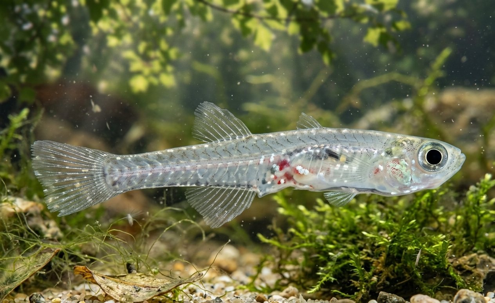

Philippine Marine Life
Beneath the Coral Triangle
The Philippines anchors the Coral Triangle — the most biodiverse marine ecosystem on Earth, with 915 fish species and over 500 coral species.
Philippine Marine Life
The Philippines anchors the Coral Triangle — the most biodiverse marine ecosystem on Earth, with 915 fish species and over 500 coral species.
The world's largest fish — a gentle giant that filters plankton from Philippine seas. Donsol in Sorsogon is one of the world's top sites for whale shark encounters, drawing researchers and divers from every continent.
The Collection
Twenty-four species — sharks, rays, reef fish, dolphins, deep-sea dwellers, and crustaceans — representing the astonishing depth of Philippine marine biodiversity.

The only strictly marine herbivorous mammal. Philippine waters — particularly Palawan and the Sulu Sea — hold some of the last significant Dugong populations in Asia.
Vulnerable
The world's largest fish. Donsol in Sorsogon is one of the world's top sites for whale shark encounters — a peaceful giant that filters plankton from Philippine seas.
EndangeredA small, slender shark found only in Philippine coastal waters — one of the most geographically restricted sharks on Earth. Critically threatened by targeted fishing and bycatch across its entire tiny range.
Critically EndangeredA striking reef fish found only in Philippine waters — its vivid cobalt-blue spots on a dark body make it one of the most visually distinctive angelfish in the Indo-Pacific. A prized species in the aquarium trade, adding to its conservation pressure.
VulnerableA cartilaginous fish halfway between a shark and a ray — named for its guitar-shaped body. Found in shallow Philippine coastal waters, it has been devastated by targeted fishing and is now one of the most endangered elasmobranchs in Asia.
Critically EndangeredA brackish-water catfish endemic to Manila Bay and Laguna de Bay — a cultural and culinary staple of the region for centuries. Heavily impacted by the dramatic decline in water quality and overfishing in its native waters.
VulnerableA small, schooling silverside fish endemic to the waters around Culion Island in Palawan. A key prey species in the food web of one of the Philippines' most biodiverse marine regions.
Data DeficientA small, abundant pelagic fish that forms the foundation of Philippine marine food webs. An economically vital species — dried and fermented into the beloved condiment bagoong — and a keystone prey species for larger marine predators.
Least ConcernA cryptic, eel-like blenny endemic to Philippine reef habitats. Rarely seen and poorly studied, it lives hidden within coral rubble and reef crevices — one of many small reef fish that highlight how much remains unknown about Philippine marine biodiversity.
Data DeficientA tiny, secretive fish found only in the coral reefs surrounding the Cuyo Islands of Palawan. It lives entirely within living coral heads — making it entirely dependent on the health of Philippine reef ecosystems for its survival.
Data DeficientA ghostly deep-sea fish from a lineage older than the dinosaurs. Found in the abyssal depths of Philippine waters, it is rarely encountered and almost entirely unstudied — a reminder of how little we know of the deep Philippine Sea.
Data DeficientA bizarre, flattened fish that walks along the seabed on modified fins rather than swimming. Its triangular, armoured body and lure-tipped snout make it one of the most unusual fish found in Philippine coastal waters.
Data DeficientA small, deep-water catshark found in the depths of the Philippine Sea. Rarely encountered and poorly understood, it is one of several endemic or near-endemic sharks in Philippine waters whose populations have never been formally assessed.
Data DeficientA group of crabs inhabiting the mangrove fringes and estuaries of the Philippine archipelago — ecosystems that filter coastal waters, protect shorelines from typhoons, and serve as nurseries for hundreds of marine species.
Least Concern
The world's smallest commercial fish — found only in Lake Buhi, Camarines Sur, Luzon. A cultural icon of the Bicol region, it has been harvested for generations but is now critically threatened by overfishing and the introduction of invasive species into its only known habitat.
Critically EndangeredOne of the world's rarest and least-known clownfish — found only in Philippine reef waters. Its relationship with its host anemone, spawning behaviour, and population size remain almost entirely unstudied by science.
Data DeficientA small, brilliantly coloured damselfish endemic to the reefs of Mindanao and nearby islands. One of the few damselfish species where both parents share equal responsibility for guarding and fanning the nest until eggs hatch.
VulnerableA dazzlingly coloured fairy wrasse discovered only recently in the deep reefs of the Philippines. Its vivid magenta and orange hues make it one of the most visually striking wrasses in the Indo-Pacific — and a reminder of how many new species await discovery in Philippine waters.
Data DeficientA brilliantly coloured wrasse found only in the deep Philippine reefs — its fiery red and orange body blazes through the dim water of the mesophotic zone. Formally described in 2020, it is one of several new wrasse species recently discovered in Philippine waters.
Data DeficientA small but ferociously territorial reef fish endemic to Philippine waters. Its bold spotted pattern and aggressive disposition belie its tiny size — it defends coral crevices against all comers and can reverse its sex depending on the needs of its local population.
Data DeficientAn endemic surgeonfish found grazing algae across Philippine coral reefs. As a key herbivore, it keeps reefs clean and free of algae overgrowth — playing a vital role in maintaining the balance and health of the coral ecosystems it inhabits.
Least ConcernAn endemic reef wrasse found only in the Philippine and nearby Indonesian reefs — the male's electric-blue, orange, and red breeding colours are among the most vivid of any fish on the Coral Triangle. First described in 1978 from Philippine specimens, it remains a prized sighting for divers on deep reef slopes across the archipelago.
Least ConcernA living fossil found in the deep reefs of the Philippines — its spiral shell and tentacled form virtually unchanged for 500 million years. Collected for its beautiful shell across generations, it is now protected under Philippine law, though enforcement in remote reef areas remains a challenge.
VulnerableA bioluminescent deep-sea predator found only in the depths of the Sulu Sea. Armed with long, fang-like teeth and light-producing organs along its body, it is one of the most alien-looking creatures in Philippine waters — and one of the least studied.
Data DeficientConservation
The Philippines has lost over 70% of its original forest cover. Every species documented here depends on urgent collective action.
Click any card to view full details.